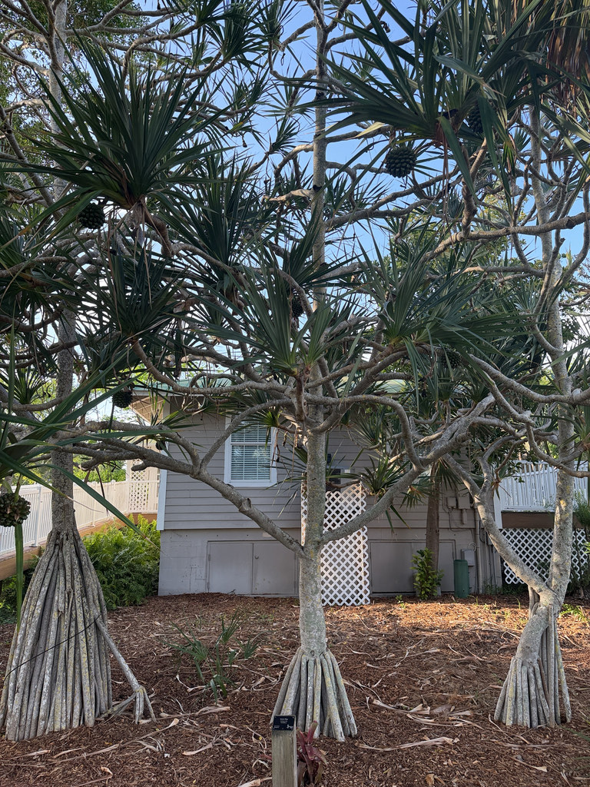

- Despite the name, the Screw Pine is no pine at all — it's a monocot, more closely related to grasses, palms, and orchids than to any conifer. The 'screw' comes from the spiral of leaves winding up its trunk.
- It walks on stilts: woody prop roots brace the trunk from several feet out, and the trunk flares wide at the base — the park's best specimens, lit up at our holiday show, look uncannily like Hawaiian hula dancers.
- Only female trees make the big pineapple-like fruit balls — and ours are fruiting right now, so the heavy globes are out.
- Watch your head near the low fruit and mind the saw-toothed leaf edges — these are armed plants.
Native to the Mascarene Islands of the Indian Ocean — Mauritius, Rodrigues, and Réunion — and long naturalized in Madagascar, where it was once thought native. One of roughly 750 species of Pandanus (the screwpines), spread across the Old World tropics from Africa to the Pacific.
- The Screw Pine looks like a tree caught mid-stride. Woody prop roots descend from the trunk and lower branches, bracing the plant several feet out from its base, while the trunk itself flares dramatically wide at the bottom. At Palma Sola the finest specimens — four in a row directly behind the office, between the building and the walking path — take full advantage of that silhouette.
- During the park's winter holiday light show, staff wrap the trunks and every arm in lights, and the flared, root-braced form lit from within looks remarkably like a Hawaiian hula dancer. They're among the show's most striking features.
- The common name comes from the way the long leaves spiral around the trunk like the thread of a screw — a pattern that grows more pronounced as the plant ages and old leaf scars ring the bark.
- The species name utilis means 'useful,' and it has earned it: across the Indian Ocean and Pacific islands, Pandanus leaves are dried, rolled, and woven into mats, baskets, hats, ropes, and thatch — a tradition alive from Kerala to Hawaii.
- A word of caution to go with the beauty: those four specimens sit between the office and the walking path rather than on it, but their low fruit can still catch an unwary head, and the leaf edges and tips are genuinely sharp. Admire them, but mind the clearance.
The Screw Pine's architecture does quiet wildlife work. Its dense spiraling crown and the cage of stilt-like prop roots create sheltered microhabitats at and above ground level, giving cover to lizards, insects, and small animals.
The fragrant male flowers draw insects, and the large compound fruits, ripening from green to orange-red, are eaten by mammals — in Florida, squirrels are the most common visitors, gnawing the fibrous segments. Birds use the spiny crown as protected nesting and roosting cover.
male and female flowers grow on separate trees, so only female plants bear fruit. Propagated by seed or by offsets/suckers; prop roots are adventitious, growing from the trunk and branches down into the soil.
Male flowers in long, fragrant, branched clusters surrounded by white bracts; female flowers in rounder, cone-like heads. On separate trees.
Large, pineapple-like multiple fruit (a cluster of fused woody drupes) 6 to 8 inches across, ripening from green to orange-red. Edible but fibrous, and must be cooked; not flavorful to people, but wildlife takes it.
Long, strap-shaped, blue-green, up to 6 feet, spiraling around the trunk; edges and midrib lined with sharp teeth, tapering to a spiny tip.
Upright trunk flaring wide at the base, ringed with spiral leaf scars, braced by woody aerial prop roots.
Find the four specimens behind the office and read the form — the wide flared base, the stilt prop roots, the spiral of leaf scars climbing the trunk. Look for the heavy fruit balls on the female trees (out right now), ripening green to orange-red. Picture the silhouette lit at the holiday show — that hula-dancer shape is the whole reason these are featured.
And keep a respectful distance from the saw-edged leaves.
The hazard here is physical — saw-toothed leaf edges, spiny tips, and heavy low-hanging fruit can all injure. Use care nearby.
The fibrous fruit is edible cooked but not especially flavorful; related Pacific species are important staples, but this isn't a food plant here.
There's no known toxicity; the sharp leaves are as much a hazard to pets as to people.
PARK CONTEXT: Best specimens are four in a row directly behind the office, between the building and the walking path (not on the path). Featured in the winter holiday light show — trunks and arms wrapped in lights; flared, prop-rooted form looks like a Hawaiian hula dancer. Female trees fruiting now (large fruit balls out). HAZARD: low fruit can hit heads; leaf edges/tips are sharp.


- © Greg Bratlee (CC-BY-NC), via iNaturalist
- © Randall Carter (CC-BY-NC), via iNaturalist
- © Austin Sibrian (CC-BY-NC), via iNaturalist
- © theblackd0g13 (CC-BY-NC), via iNaturalist